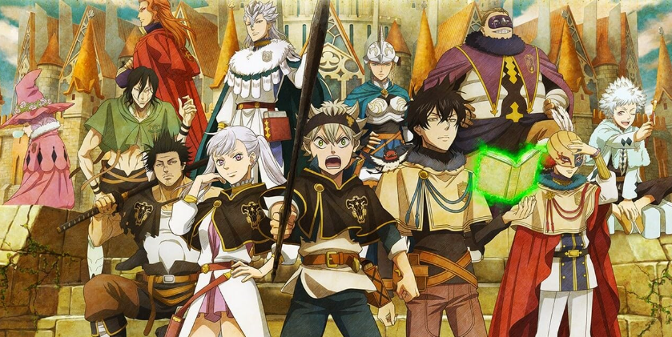

Top 10 Characters of Black Clover 2024
Explore the vibrant and magical world of Black Clover through our meticulously curated list of the top 10 characters in 2024. Immerse yourself in the ranks of powerful magic users, each possessing unique abilities and captivating stories. From the fearless anti-magic wielder Asta to the calm and skilled wind mage Yuno, this ranking showcases the diverse and compelling characters that make Black Clover an unforgettable anime and manga series. Our ranking is based on a blend of factors, including character development, magical prowess, and impact on the storyline. Discover the strengths, personalities, and achievements of these remarkable characters as we celebrate their contributions to the captivating narrative of Black Clover. Join us in the magical journey and get to know the characters who have left an indelible mark on the world of Black Clover. From the iconic leaders of magical squads to the rising stars, this ranking is a testament to the richness and depth of the Black Clover universe.
Asta
Brave and determined anti-magic user.
Yuno
Skilled wind magic user with a calm demeanor.
Noelle Silva
Water magic user from the noble Silva family.
Yami Sukehiro
Leader of the Black Bulls, master of dark magic.
Charlotte Roselei
Commander of the Blue Rose Knights, excels in briar magic.
Mimosa Vermillion
Skilled in plant magic and a member of the Golden Dawn.
Luck Voltia
Member of the Black Bulls, specializes in lightning magic.
Fuegoleon Vermillion
Captain of the Crimson Lions, controls fire magic.
Vanessa Enoteca
Black Bulls member, skilled in thread magic.
Klaus Lunettes
Golden Dawn member, manipulates steel magic.